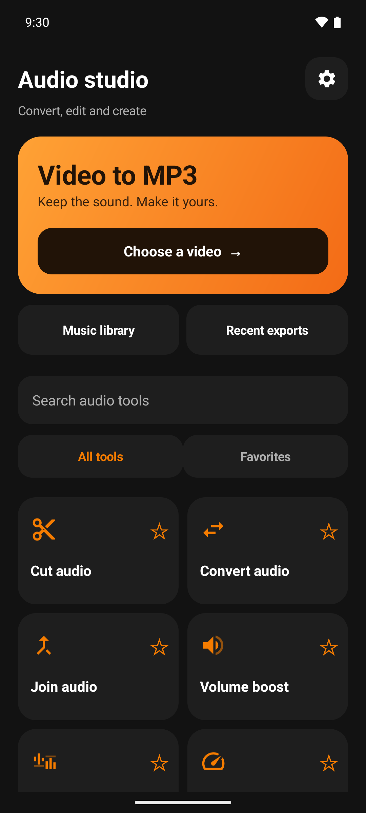
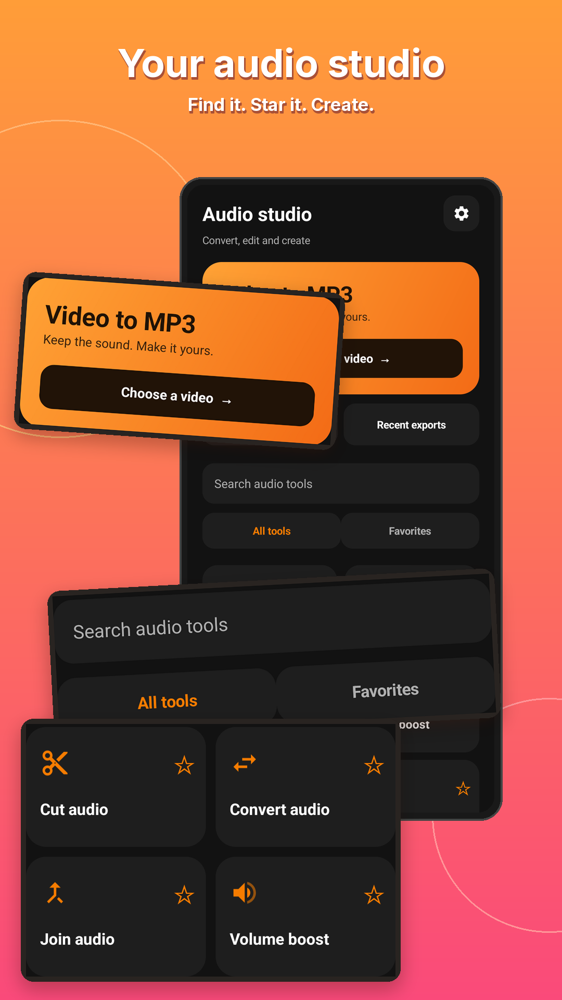
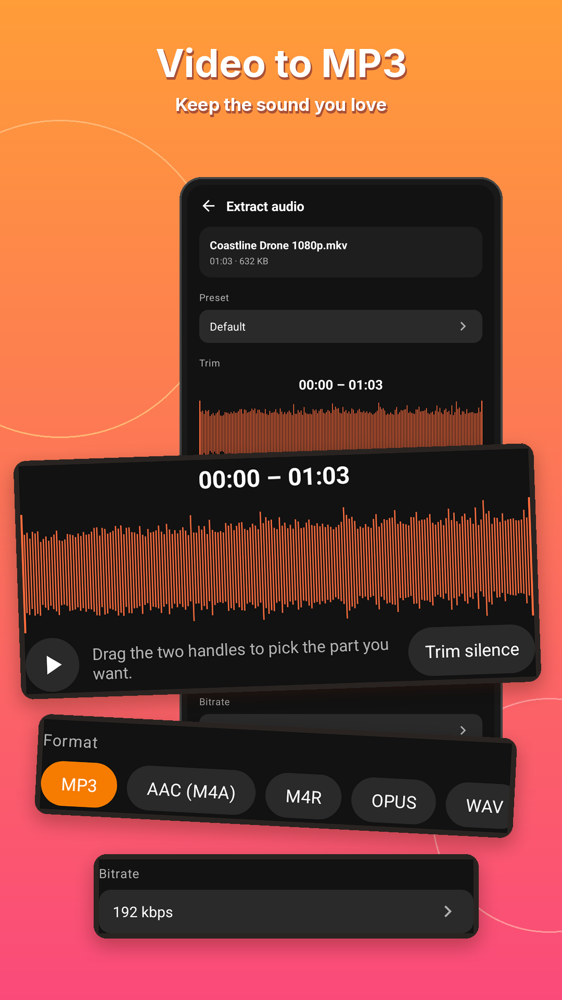
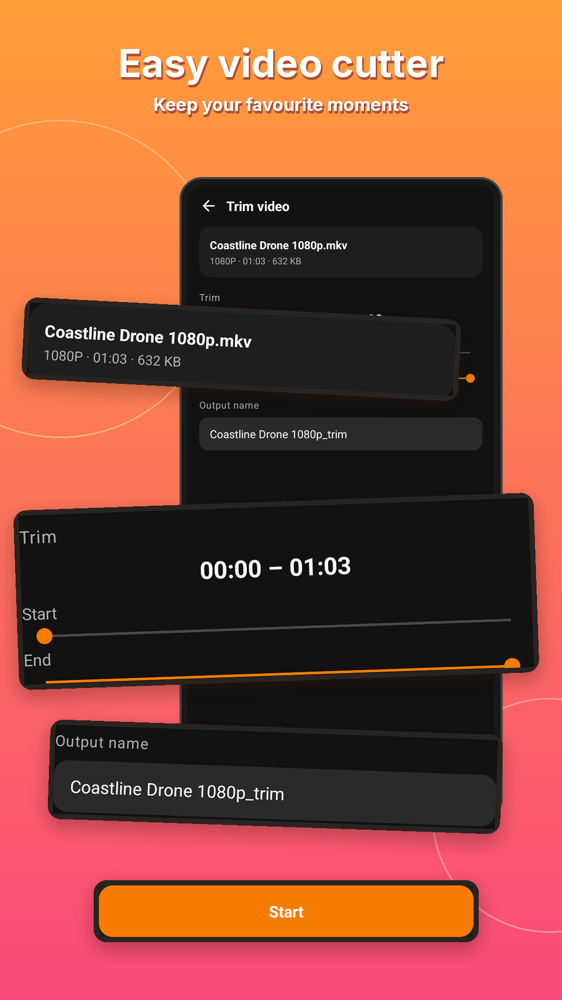
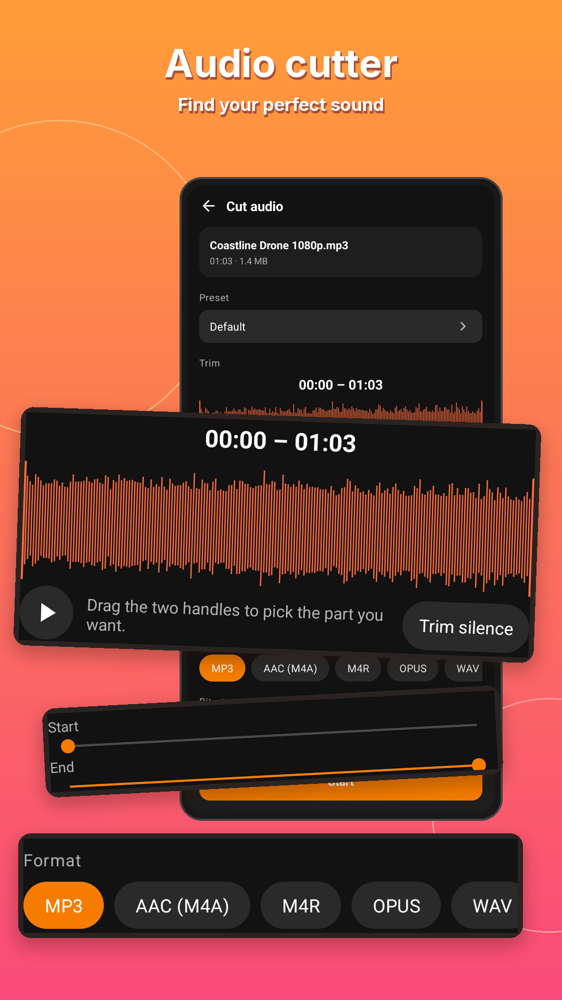
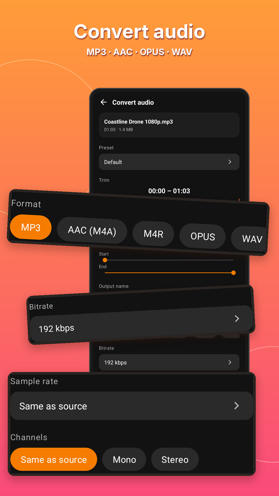
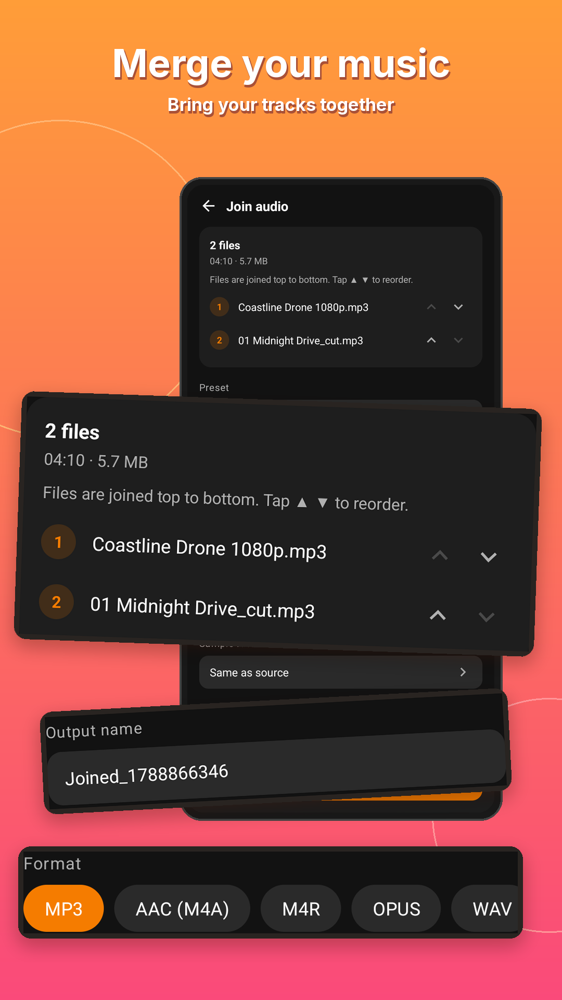
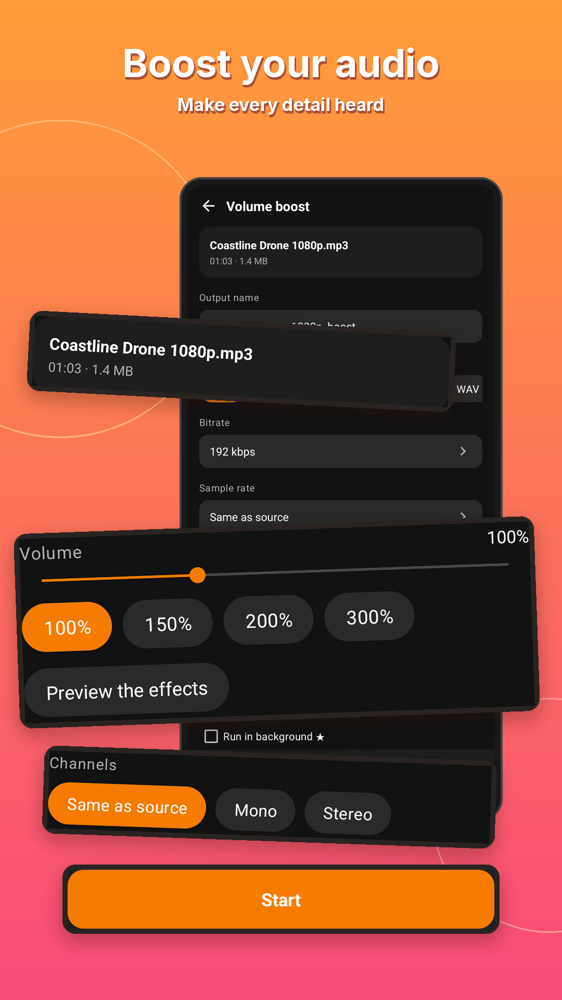
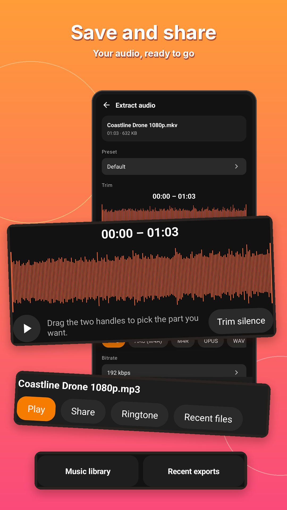

Find it. Star it. Use it.
Search tools by name and star your favorites. Your personal toolkit is ready the next time you open the app.
YOUR POCKET AUDIO STUDIO
Turn a video into your next favorite track. Extract MP3, cut the best part, merge your music and make a ringtone — right on your Android phone.
Android 8.0+ · Media processed on your device

A LITTLE LESS TAPPING
Search tools by name and star your favorites. Your personal toolkit is ready the next time you open the app.
Pick the exact part you want with trim controls, then preview the sound before saving.
Convert audio formats, adjust quality and process several files. Advanced batch and queue options depend on your plan.
Save your audio, play it back, share it or set it as a ringtone from the result screen.
Also in the Audio studio: cut audio, multi-cut, split file, join audio, audio mixer, volume boost, audio speed, voice changer, karaoke (remove vocals) and audio format conversion. Some tools use credits or Premium.
SEE IT IN ACTION








Open Video To Audio and choose a file on your phone.
Pick a format, set the quality or trim a section.
Export to your music library, then play or share.
Media conversion runs on your device. Ads, analytics and purchases may use the internet; see the privacy policy for details.
MP3, AAC (M4A), OPUS, WAV and M4R are available in the audio tools. Some advanced formats and options require Premium.
Basic conversion is available without a subscription. Some advanced tools, higher-quality options and larger batches use credits or Premium.
Get Video To Audio & Mp3 Cutter free from Google Play. It runs on Android 8.0 and newer.
192 kbps is a good everyday default. Use 320 kbps (credits or Premium) for music you want to keep, 96 kbps mono for podcasts and lectures, and 64 kbps mono for sending quickly. A higher bitrate cannot make a video's audio better than the original.
Yes. Extract the audio, trim the part you want on the waveform, then tap Ringtone on the result screen. Android may ask for permission to change system settings the first time.
Blog · Hướng dẫn bằng tiếng Việt
8 bài hướng dẫn mới kèm ảnh chụp ứng dụng, các bước thực hiện và mẹo sử dụng.